Kafka
https://yq.aliyun.com/articles/31546 【笔记】Apache kafka实战 【快速入门】 Kafka入门 https://github.com/ZhongFuCheng3y/3y
Kafka入门
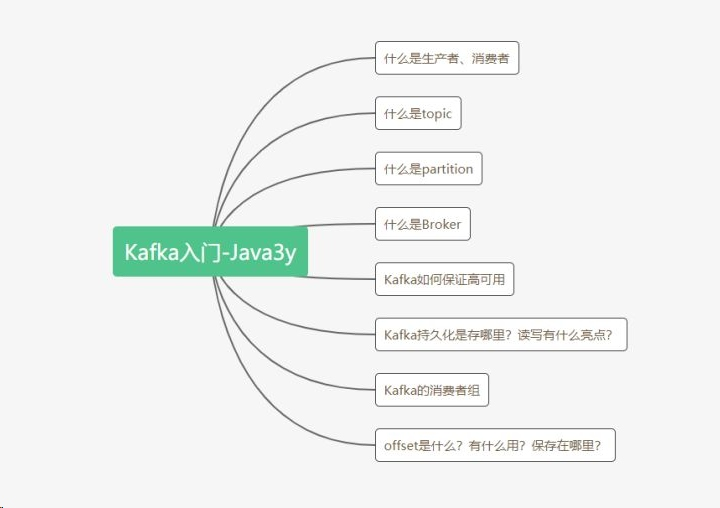
生产者 & 消费者
Kafka是一个消息队列，把消息放到队列里边的叫生产者，从队列里边消费的叫消费者。
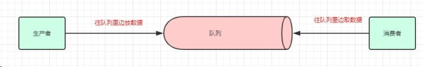
topic
一个消息中间件，队列不单单只有一个，我们往往会有多个队列，而我们生产者和消费者就得知道：把数据丢给哪个队列，从哪个队列消息。我们需要给队列取名字，叫做topic(相当于数据库里边表的概念)
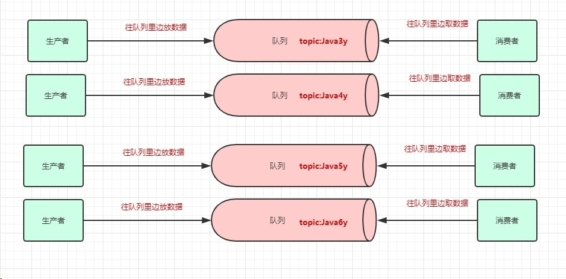 现在我们给队列取了名字以后，生产者就知道往哪个队列丢数据了，消费者也知道往哪个队列拿数据了。我们可以有多个生产者往**同一个队列(topic)丢数据，多个消费者往同一个队列(topic)**拿数据
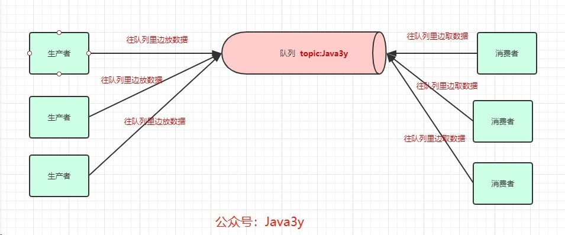
Partition
为了提高一个队列(topic)的吞吐量，Kafka会把topic进行分区(Partition)
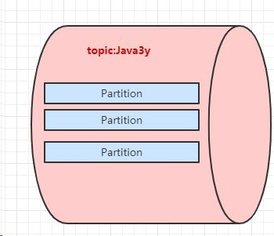 所以，生产者实际上是往一个topic名为Java3y中的分区(Partition)丢数据，消费者实际上是往一个topic名为Java3y的分区(Partition)取数据
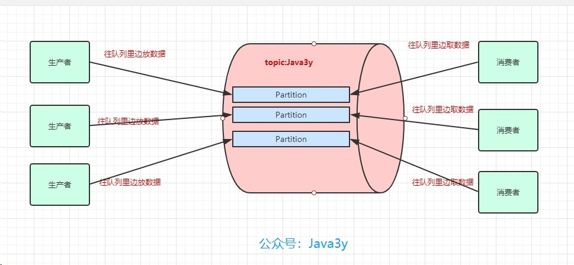
Broker
一台Kafka服务器叫做Broker，Kafka集群就是多台Kafka服务器：
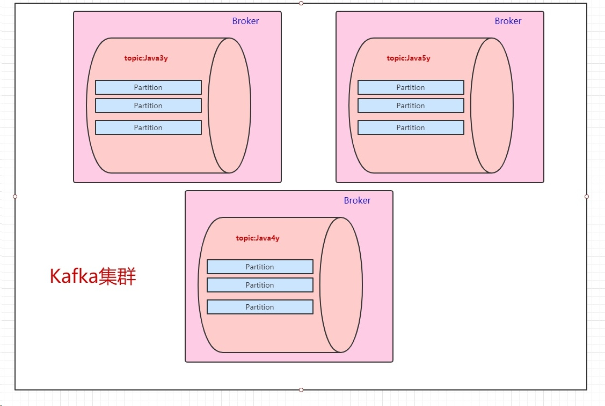 一个topic会分为多个partition，实际上partition会分布在不同的broker中，举个例子：
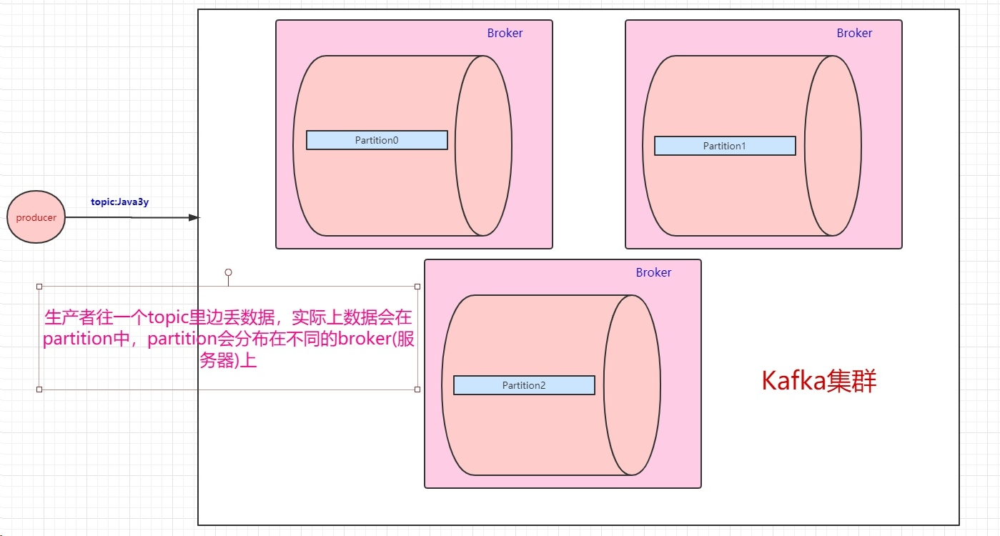 由此得知：Kafka是天然分布式的。
备份
现在我们已经知道了往topic里边丢数据，实际上这些数据会分到不同的partition上，这些partition存在不同的broker上。分布式肯定会带来问题：“万一其中一台broker(Kafka服务器)出现网络抖动或者挂了，怎么办？”Kafka是这样做的：我们数据存在不同的partition上，那kafka就把这些partition做备份。比如，现在我们有三个partition，分别存在三台broker上。每个partition都会备份，这些备份散落在不同的broker上。
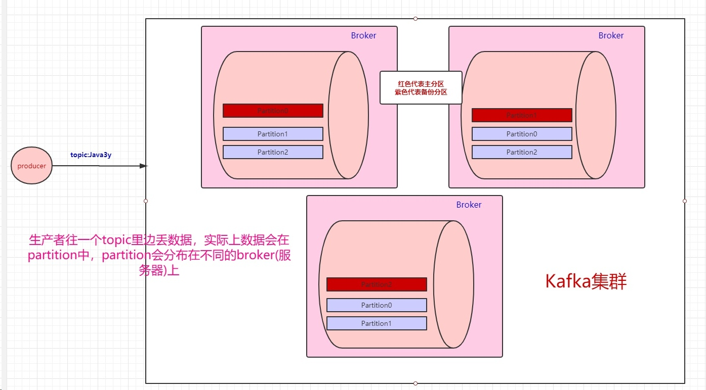 红色块的partition代表的是主分区，紫色的partition块代表的是备份分区。生产者往topic丢数据，是与主分区交互，消费者消费topic的数据，也是与主分区交互。
高可用
备份分区仅仅用作于备份，不做读写。如果某个Broker挂了，那就会选举出其他Broker的partition来作为主分区，这就实现了高可用。 另外值得一提的是：当生产者把数据丢进topic时，我们知道是写在partition上的，那partition是怎么将其持久化的呢？（不持久化如果Broker中途挂了，那肯定会丢数据嘛)。Kafka是将partition的数据写在磁盘的(消息日志)，不过Kafka只允许追加写入(顺序访问)，避免缓慢的随机 I/O 操作。
- Kafka也不是partition一有数据就立马将数据写到磁盘上，它会先缓存一部分，等到足够多数据量或等待一定的时间再批量写入(flush)。 上面balabala地都是讲生产者把数据丢进topic是怎么样的，下面来讲讲消费者是怎么消费的。既然数据是保存在partition中的，那么消费者实际上也是从partition中取数据。
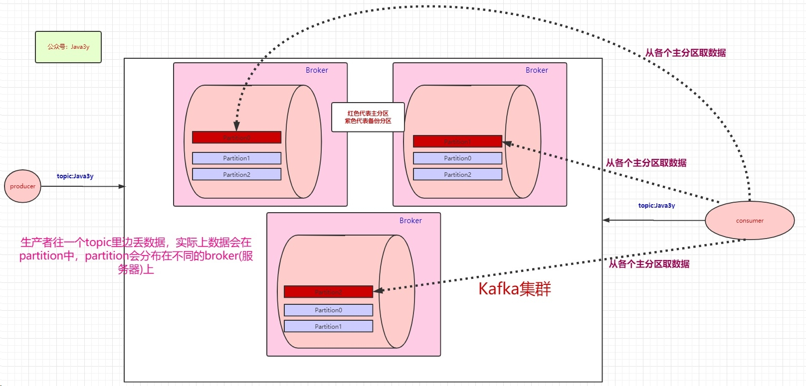
消费者组
生产者可以有多个，消费者也可以有多个。像上面图的情况，是一个消费者消费三个分区的数据。多个消费者可以组成一个消费者组。
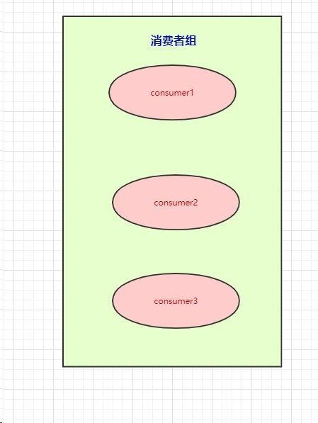 本来是一个消费者消费三个分区的，现在我们有消费者组，就可以每个消费者去消费一个分区（也是为了提高吞吐量）
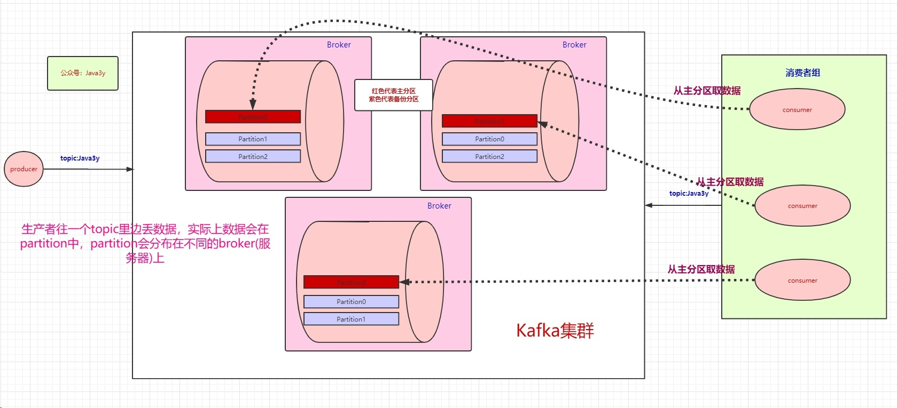 按图上所示的情况，这里想要说明的是：
- 如果消费者组中的某个消费者挂了，那么其中一个消费者可能就要消费两个partition了
- 如果只有三个partition，而消费者组有4个消费者，那么一个消费者会空闲
- 如果多加入一个消费者组，无论是新增的消费者组还是原本的消费者组，都能消费topic的全部数据。（消费者组之间从逻辑上它们是独立的） 前面讲解到了生产者往topic里丢数据是存在partition上的，而partition持久化到磁盘是IO顺序访问的，并且是先写缓存，隔一段时间或者数据量足够大的时候才批量写入磁盘的。
消费者高速读, 少做了一步拷贝
消费者在读的时候也很有讲究：正常的读磁盘数据是需要将内核态数据拷贝到用户态的，而Kafka 通过调用sendfile()直接从内核空间（DMA的）到内核空间（Socket的），少做了一步拷贝的操作。
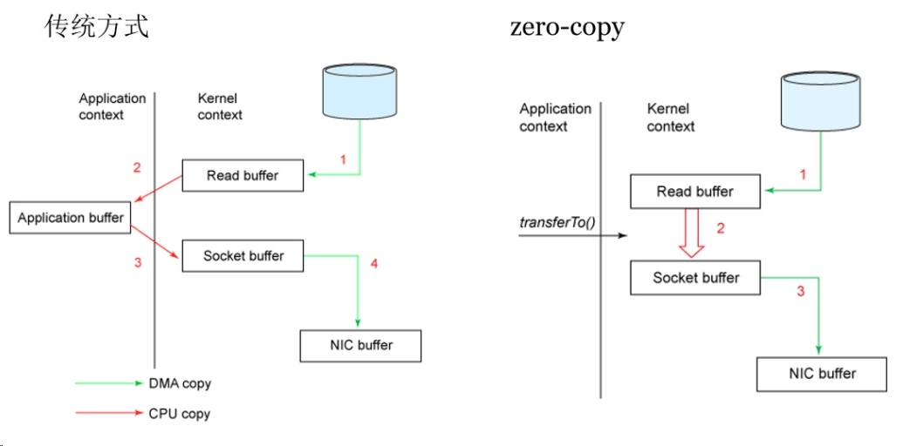 有的同学可能会产生疑问：消费者是怎么知道自己消费到哪里的呀？Kafka不是支持回溯吗？那是怎么做的呀？
- 比如上面也提到：如果一个消费者组中的某个消费者挂了，那挂掉的消费者所消费的分区可能就由存活的消费者消费。那存活的消费者是需要知道挂掉的消费者消费到哪了，不然怎么玩。
offset
这里要引出offset了，Kafka就是用offset来表示消费者的消费进度到哪了，每个消费者会都有自己的offset。说白了offset就是表示消费者的消费进度。 在以前版本的Kafka，这个offset是由Zookeeper来管理的，后来Kafka开发者认为Zookeeper不合适大量的删改操作，于是把offset在broker以内部topic(__consumer_offsets)的方式来保存起来。 每次消费者消费的时候，都会提交这个offset，Kafka可以让你选择是自动提交还是手动提交。 既然提到了Zookeeper，那就多说一句。Zookeeper虽然在新版的Kafka中没有用作于保存客户端的offset，但是Zookeeper是Kafka一个重要的依赖。
- 探测broker和consumer的添加或移除。
- 负责维护所有partition的领导者/从属者关系（主分区和备份分区），如果主分区挂了，需要选举出备份分区作为主分区。
- 维护topic、partition等元配置信息
- ….
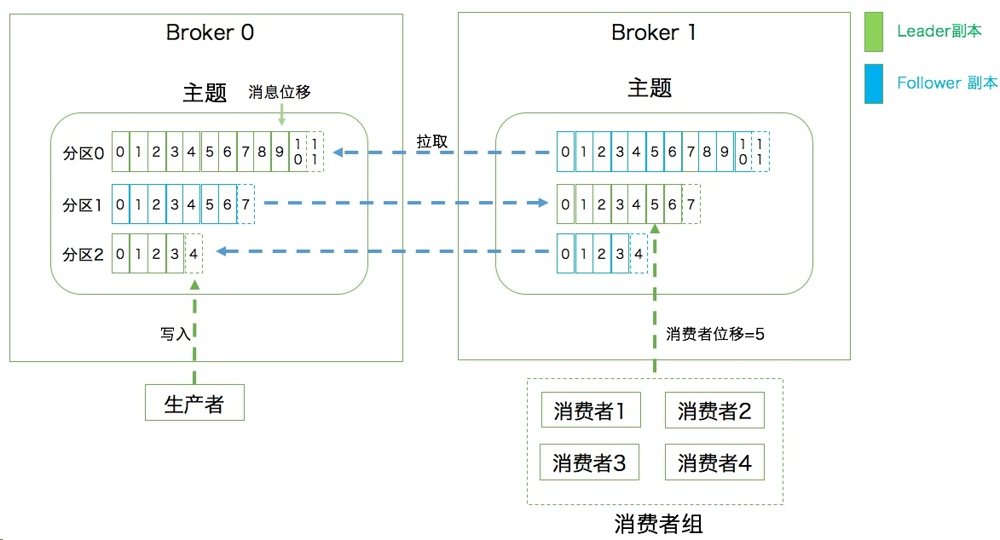
最后总结
通过这篇文章，文章开头那几个问题估计多多少少都懂一些啦。我来简要回答一下：
- 使用消息队列不可能是单机的（必然是分布式or集群） Kafka天然是分布式的，往一个topic丢数据，实际上就是往多个broker的partition存储数据
- 数据写到消息队列，可能会存在数据丢失问题，数据在消息队列需要持久化(磁盘？数据库？Redis？分布式文件系统？) Kafka会将partition以消息日志的方式(落磁盘)存储起来，通过 顺序访问IO和缓存(等到一定的量或时间)才真正把数据写到磁盘上，来提高速度。
- 想要保证消息（数据）是有序的，怎么做？ Kafka会将数据写到partition，单个partition的写入是有顺序的。如果要保证全局有序，那只能写入一个partition中。如果要消费也有序，消费者也只能有一个。
- 为什么在消息队列中重复消费了数据 凡是分布式就无法避免网络抖动/机器宕机等问题的发生，很有可能消费者A读取了数据，还没来得及消费，就挂掉了。Zookeeper发现消费者A挂了，让消费者B去消费原本消费者A的分区，等消费者A重连的时候，发现已经重复消费同一条数据了。(各种各样的情况，消费者超时等等都有可能…) 如果业务上不允许重复消费的问题，最好消费者那端做业务上的校验（如果已经消费过了，就不消费了）
注意学习配置
这篇文章主要是Kafka入门，Kafka还涉及到别的概念，以及还有别的东西。在我感觉中，很多的面试题都跟配置有关，所以在解决某些问题的时候，先看看能不能通过现有配置解决掉（学多了框架，你就会发现很多官方的就已经支持解决了，你做的可能改改配置/参数就完事了）。